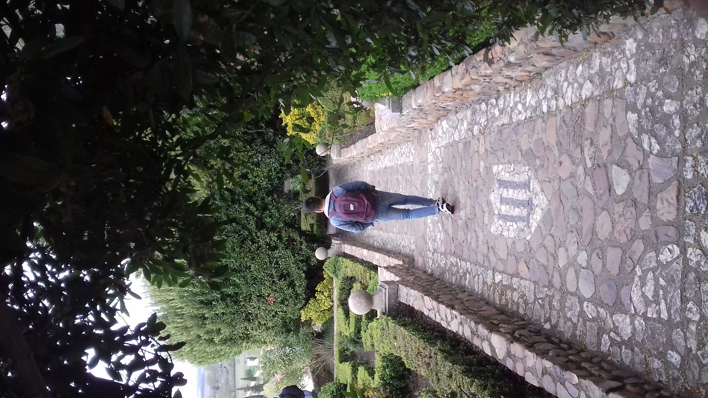

Voyager
Collection personnelle

En plus de mes différents projets, j'apprécie voyager et découvrir de nouveaux lieux. Ces voyages s'accompagnent de plusieurs photographies que je regroupe. Cette sélection provient d'un voyage en Espagne.

Ces jardins mélangaient de nombreuses couleurs et le tout rendait cet espace unique.
La photographie est également un art qui se partage. Durant ce voyage, je pouvais compter sur mes amis et les capturer à travers l'appareil.